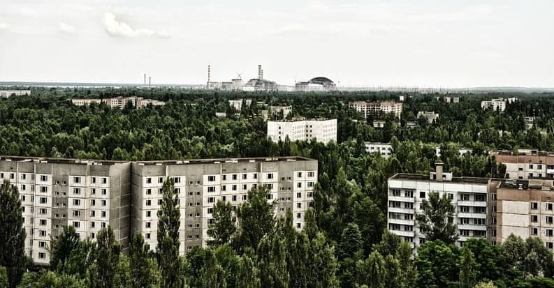
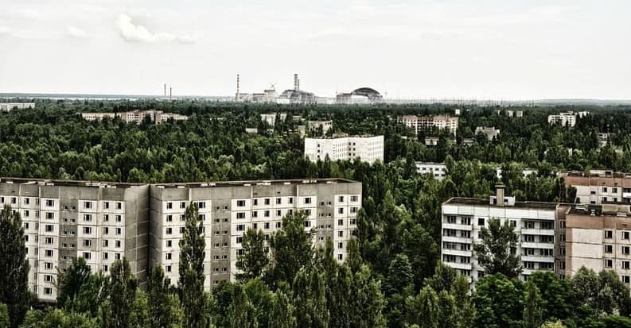

"Não havia nada de sensato em Chernobyl. O que aconteceu lá, o que
aconteceu depois, até o bem que fizemos, tudo isso... tudo isso,
uma loucura."
- Valery Legasov
Introdução
A usina nuclear de Chernobyl
No início da manhã de 26 de abril de 1986, a Usina Nuclear de Chernobyl na Ucrânia explodiu, criando o que muitos consideram o pior desastre nuclear que o mundo já viu.
Localização
A Usina Nuclear de Chernobyl está a 130 km de Kiev, capital da Ucrânia. É composta por quatro reatores que foram projetados e construídos durante as décadas de 1970 e 1980. No início da manhã de 26 de abril de 1986, a Usina Nuclear de Chernobyl na Ucrânia explodiu, criando o que muitos consideram o pior desastre nuclear que o mundo já viu.
A cidade recém-construída de Pripyat era a cidade mais próxima da usina, a pouco menos de 3 km. Abrigava quase 50.000 pessoas em 1986. Uma cidade menor e mais velha, Chernobyl, ficava a cerca de 15 km de distância abrigava cerca de 12.000 residentes. O restante da região era, majoritariamente, fazendas e bosques.
A Usina
A usina de Chernobyl usou quatro reatores soviéticos nucleares RBMK-1000 - um projeto que, atualmente, é universalmente reconhecido como inerentemente defeituoso. Os reatores RBMK eram de um projeto de tubo de pressão que usava um combustível de dióxido de urânio U-235 enriquecido para aquecer água, criando vapor que aciona as turbinas dos reatores e gera eletricidade.
Na maioria dos reatores nucleares, a água também é usada como refrigerante e para moderar a reatividade do núcleo, removendo o excesso de calor e vapor. Porém, o RBMK-1000 usava grafite para moderar a reatividade do núcleo e para manter uma reação nuclear contínua ocorrendo no núcleo. À medida que o núcleo aquecia e produzia mais bolhas de vapor, ele se tornava mais reativo, não menos, criando um loop de feedback positivo que os engenheiros chamam de "coeficiente de vazio positivo".